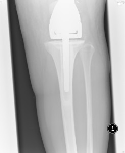

The good news is, for those of you who don’t know…I had the appointment with Prof yesterday and he said that they haven’t had such a good response to the chemo in my type of tumour for a long time! Which is excellent and puts me in the best response group for the clinical trial! So it’s the best case scenario considering the circumstances. It basically means (this is where it gets a bit confusing!) that the chemo goes on for the longest of the possibilities but it’s just maintenance chemo (i.e. to be sure) and so it’s much lighter than the heavy stuff I’ve been having. So I’ll have up to 8 more sessions every 3 weeks, taking me to the end of February latest. It’s a long time and I know I’ve still got a long way to go but at least this hideous 5 months is starting to seem worth it if it’s saved my life. The chemo will only be a few days each time as opposed to the 5 full on days I was used to…and supposedly I’ll be much much less likely to go neutropenic and get ill in between cycles, so hopefully I won’t end up in Frimley Park Hospital in between. If that’s the case then it’ll be a breeze compared to what I been going through! Although of course I’ve still got the battle of my leg to contend with and the challenge of building it back up, learning to maenovre it and to walk again. It’s still very hard work and extremely painful but I notice very very small progress and I just have to be thankful that the chemo’s been working and the op was success and I was able to keep my leg.
Here are some pics of what my leg now looks like to give you more an idea of what I’ve had done…


They removed the tumour from my femur (thigh bone) and the surrounding bone which was a total of 13 cm of bone above my knee aswell as a knee replacement and metal going below …my knee into the tibia bone. So there’s a fair bit of metal in my leg now! It’s heavy and bloody painful learning to use my leg again but at least I’ve still got it and the tumour’s out…
Anyway I just wanted to share the good news with all my faithful bloggers!
Lots of love xxxxxxxxxxxxxxxxxxxxxxxxxxxxxxxxxxxxxxxxxxxx